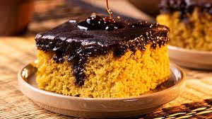

Bolo de Cenoura
3 cenouras médias (cerca de 360g ou 2 ¼ xícaras (chá) de cenoura descascada e ralada), 4 ovos em temperatura ambiente, 1 xícara (chá) de óleo, 1½ xícara (chá) de açúcar, 2 xícaras (chá) de farinha de trigo, 1 colher (sopa) de fermento em pó, 1 pitada de sal, manteiga e farinha de trigo para untar e polvilhar a fôrma.
Preaqueça o forno a 180 ºC (temperatura média). Unte com manteiga uma fôrma retangular de 30 cm x 20 cm e 5 cm de altura. Polvilhe farinha de trigo, chacoalhe para cobrir todo o fundo e as laterais e bata na pia para tirar o excesso. Numa tigela, coloque a farinha, o sal e o fermento, passando pela peneira. Misture e reserve. Lave e descasque as cenouras. Descarte a ponta da rama. Corte cada uma em rodelas e transfira para o liquidificador — a cenoura cortada em rodelas é triturada mais facilmente. Junte o óleo às cenouras cortadas. Numa tigela pequena, quebre um ovo de cada vez e transfira para o liquidificador — se algum estiver estragado, você não perde a receita. Acrescente o açúcar e bata bem até ficar liso, por cerca de 5 minutos. Transfira a mistura líquida para uma tigela grande e adicione os secos em 3 etapas, passando pela peneira. Misture delicadamente com um batedor de arame a cada adição para incorporar. Transfira a massa para a fôrma e leve ao forno para assar por cerca de 45 minutos. Para saber se o bolo está pronto, espete um palito na massa: se sair limpo, pode tirar do forno; caso contrário, deixe assar por mais alguns minutos. Retire o bolo do forno e deixe esfriar por 15 minutos antes de preparar a cobertura — o bolo deve estar morno na hora de colocar a cobertura de chocolate.